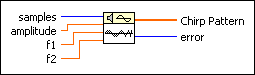
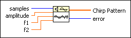

Chirp Pattern VI
Owning Palette: Signal Generation VIs
Requires: Full Development System
Generates an array containing a chirp pattern.

 Add to the block diagram Add to the block diagram |
 Find on the palette Find on the palette |
Owning Palette: Signal Generation VIs
Requires: Full Development System
Generates an array containing a chirp pattern.

| Add to the block diagram |
Find on the palette |
 |
samples is the number of samples of the Chirp Pattern. The default is 128. |
 |
amplitude is the amplitude of Chirp Pattern. The default is 1.0. |
|
f1 is the beginning frequency of Chirp Pattern in normalized units of cycles/sample. |
|
f2 is the ending frequency of Chirp Pattern in normalized units of cycles/sample. |
 |
Chirp Pattern is a signal with frequency ramping from f1*fs to f2*fs, where fs is the sampling rate. |
 |
error returns any error or warning from the VI. You can wire error to the Error Cluster From Error Code VI to convert the error code or warning into an error cluster. |
If the sequence Y represents Chirp Pattern, the Chirp Pattern VI obtains the elements of Y using the following equation:
yi = A*sin((0.5*a*i + b)*i)
for i = 0, 1, 2, …, n – 1
where A is amplitude,
a = 2(f2 – f1)/n,
b = 2f1,
f1 is the beginning frequency in normalized units of cycles/sample,
f2 is the ending frequency in normalized units of cycles/sample,
n is the number of samples.